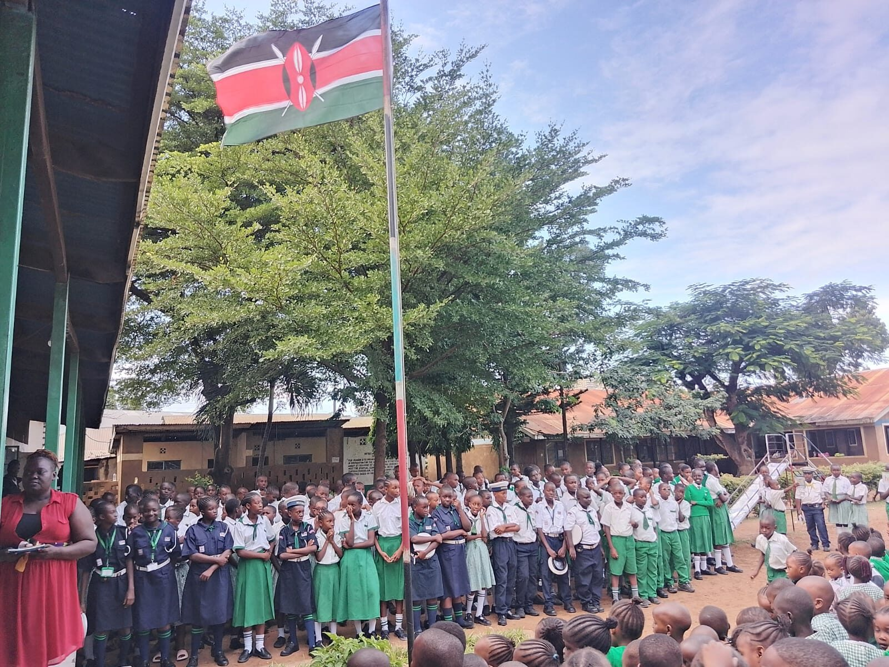
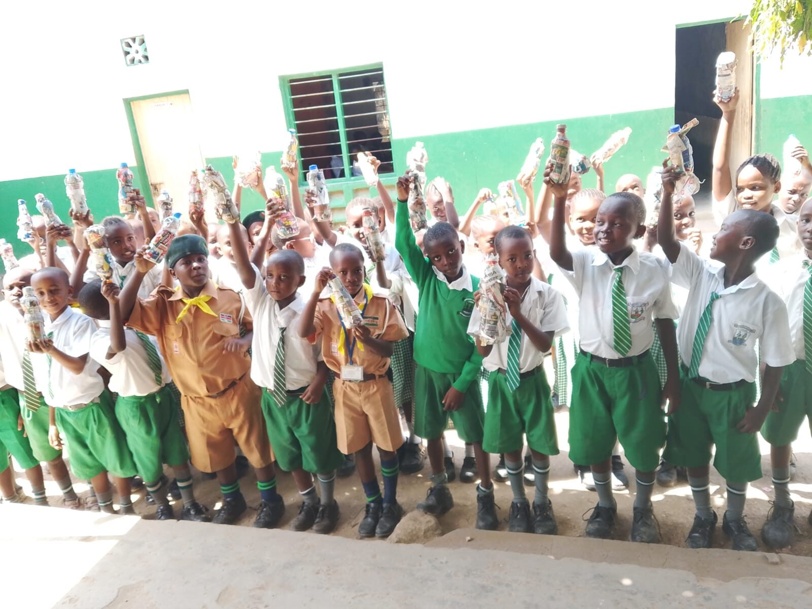
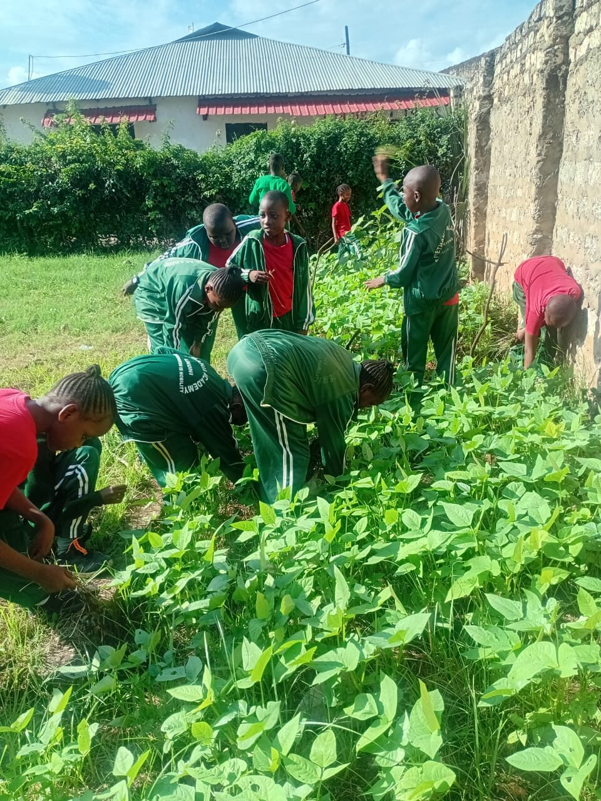
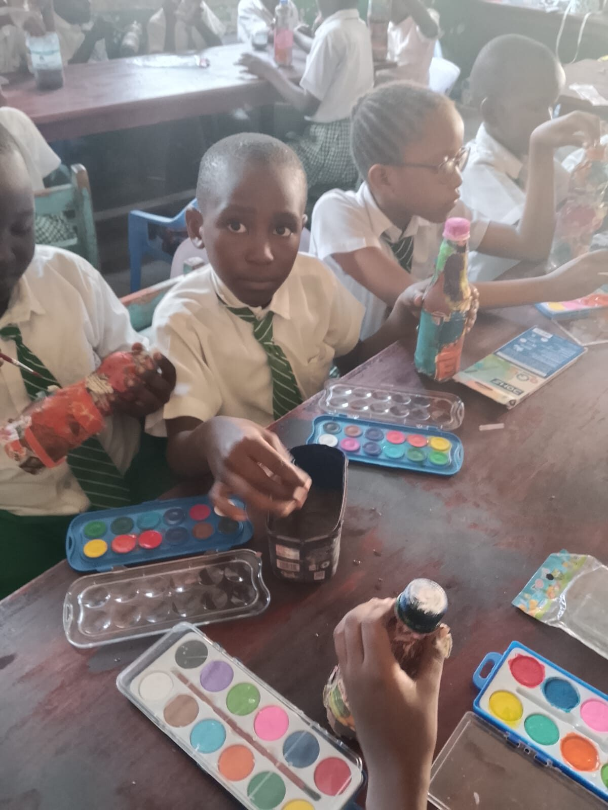

Likoni, Mombasa · Est. 1992
The Best Primary and Junior School in Likoni
For over three decades, FPFK Bethania Academy has been the trusted choice for parents in Likoni who want strong CBC results, disciplined character and a genuinely caring Christian environment for their children — from Pre-Primary right through Junior Secondary.

Why Families Choose Us
What Makes Bethania Likoni's Leading School
Ask any parent searching for the best primary and junior school in Likoni what matters most — academics, safety, values and a well-rounded child. Bethania Academy delivers on all four.
Proven CBC Academic Results
A strong, consistent record under Kenya's Competency-Based Curriculum, with the majority of our Grade 9 learners progressing into Cluster 1 secondary schools.
One School, Pre-Primary to JSS
Families keep their children in one stable, trusted institution from early years all the way through Junior Secondary — no disruptive school changes.
Christian Values & Character
Faith, discipline and integrity are woven into daily school life, shaping learners who are confident, respectful and grounded.
Rich Co-Curricular Life
Scouts, environmental clubs, gardening, arts and sport give every learner a chance to discover and grow beyond the classroom.
Safe, Well-Run Campus
Along Likoni-Ukunda Road, our campus offers a secure, orderly environment where children are known and cared for individually.
Community & Bursary Support
Through our partnership with the Aga Khan Foundation and FPFK Church, we have supported over 400 needy students with fees and nutrition since 1992.
Life at Bethania
See the Best Primary & Junior School in Likoni in Action
A well-rounded education, captured moment by moment — from national pride to environmental stewardship.

Recycling & Environmental Project
Gardening Club
Arts & Crafts Class“We looked at several schools in Likoni before choosing Bethania. The academic results matter, but what won us over was how well-mannered, confident and cared-for our children became.”A Bethania Academy Parent, Likoni
Common Questions
Best Primary and Junior School in Likoni — FAQs
What makes Bethania Academy the best primary and junior school in Likoni?
Since 1992, Bethania Academy has combined strong CBC academic outcomes — including 75% of Grade 9 learners joining Cluster 1 secondary schools — with Christian values, disciplined character formation and a rich co-curricular life, all within a safe, well-run campus in Likoni.
Does Bethania Academy offer both primary and junior secondary?
Yes. Bethania Academy is a full CBC institution covering Pre-Primary, Primary and Junior Secondary (Grade 9), so families can keep their children in one trusted school from early years through JSS.
What activities does the school offer beyond academics?
Learners take part in Scouts, environmental and recycling projects, gardening club, arts and crafts, sports, national celebrations and educational trips such as visits to the Kenyatta International Convention Centre.
How do I apply for admission?
Start your application on our Admissions page or book a campus visit via WhatsApp. Our team will guide you through requirements for Pre-Primary, Primary or Junior Secondary placement.
Where exactly is Bethania Academy located?
FPFK Bethania Academy is along Likoni-Ukunda Road, Likoni, Mombasa, Kenya (P.O. BOX 96066 - 80100), on the Mombasa south coast.
Give Your Child Likoni's Best School Experience
Book a campus visit, meet our teachers, and see for yourself why families across Likoni trust Bethania Academy.